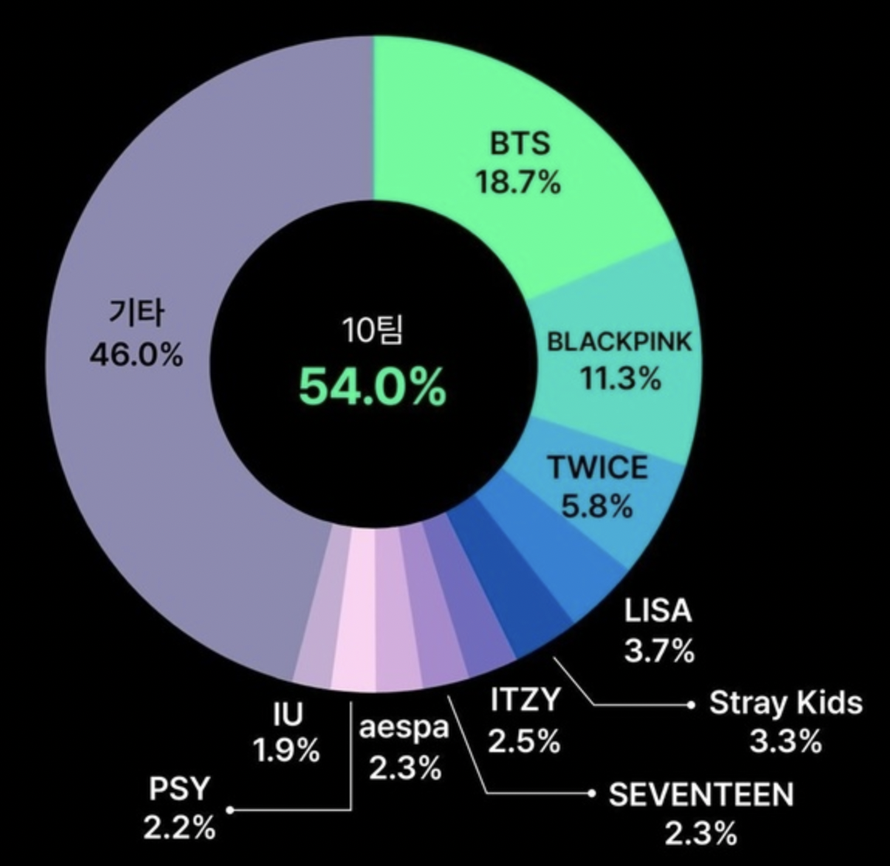

"코로나19 발생 이전 대비 소비량 변화"

k-pop의 소비량이 팬데믹 기간 동안 2.5배가량 늘었다는 조사가 나왔다. k-pop 팬덤 플랫폼인 스페이스오디티의 케이팝레이더에 의하면 2022년 올 한 해 동안 k-pop관련 영상이 643억뷰 이상의 유튜브 조회수를 기록했고 이 가운데 가장 많은 인기를 얻은 아티스트는 1위 방탄소년단(BTS)으로 18.7%의 비중을 차지한 것을 알 수 있다. 이어 블랙핑크가 11.3%, 트와이스가 5.8%, 리사가 3.7%로 각각 2위부터 4위에 올랐다. Stray Kids, ITZY,세븐틴,에스파,싸이,아이유가 10위 안에 랭크됐다. 하지만 BTS가 전 세계에서 케이팝 소비량 1위 아티스트이나, 한국에서는 BTS보다 아이유가 더 소비량이 많다.